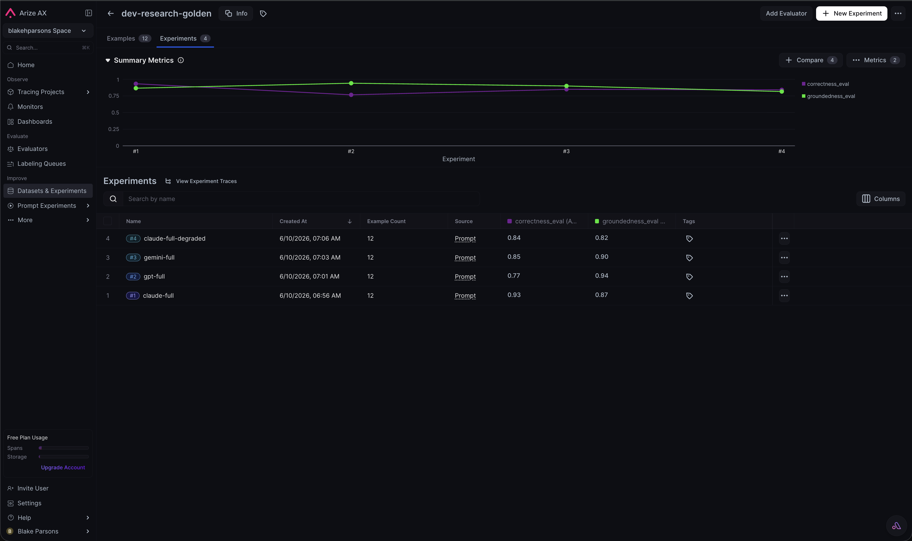
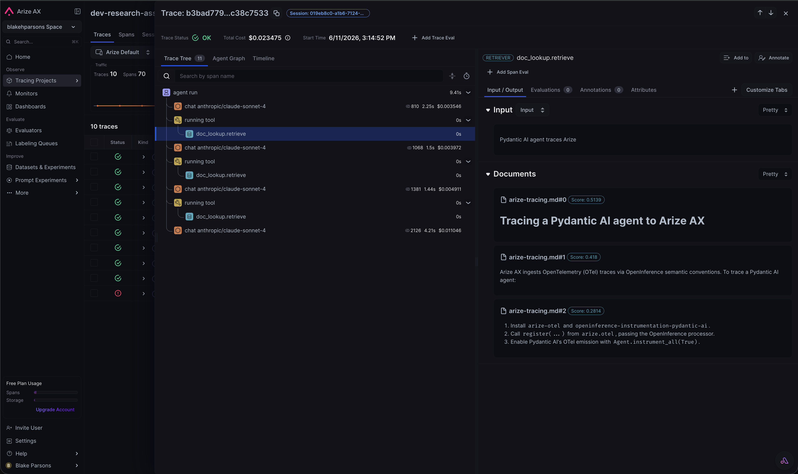

Experiment results
All runs use the same agent (Pydantic AI, 3 tools), the same golden
dataset (dev-research-golden, 12 examples), and the same Claude judge held
constant. Only the agent's provider is swapped, via one OpenRouter key. Scores are means
over the dataset (0–1), from two LLM-as-a-judge evaluators.
Model experiment — provider neutrality
| Agent model (via OpenRouter) | Correctness | Groundedness |
|---|---|---|
| Claude Sonnet 4 | 0.93 | 0.87 |
| GPT-4o | 0.77 | 0.94 |
| Gemini 2.5 Pro | 0.85 | 0.90 |
Read: Claude covers the expected key points best; GPT is the most conservative (highest groundedness, lowest correctness — it declines more); Gemini sits in between. The same harness surfaces a real, defensible model trade-off — the point of Arize's OTel / OpenInference neutrality.

Deliberate failure — observability workflow
Degraded the retriever by dropping the most-cited corpus doc (arize-tracing.md)
— --dropped-docs arize-tracing.md.
| Run | Correctness | Groundedness |
|---|---|---|
claude-full (healthy) | 0.93 | 0.87 |
claude-full-degraded | 0.84 (−0.09) | 0.82 (−0.05) |
Root cause (trace level). For "How do I send traces to Arize?" the RETRIEVER span changes:
- Healthy → top docs:
pydantic-ai-agents.md(0.39),arize-tracing.md(0.33),arize-tracing.md(0.32) — the authoritativeregister()doc is present. - Degraded → top docs:
pydantic-ai-agents.md(0.45),phoenix-vs-ax.md(0.24),pydantic-ai-agents.md(0.19) — authoritative doc gone, weaker fallbacks.
The judges catch the regression in aggregate; the waterfall shows why (the RETRIEVER no longer contains the source). Fix: restore the doc → scores return to the healthy baseline.

AGENT → LLM → TOOL → RETRIEVER → LLM. Opening the RETRIEVER span is where the root cause shows.Reproduce
python -m src.dataset # upload golden dataset
python -m src.experiment --model claude --full # baseline
python -m src.experiment --model gpt --full # model swap
python -m src.experiment --model gemini --full # model swap
python -m src.experiment --dropped-docs arize-tracing.md --full # failure